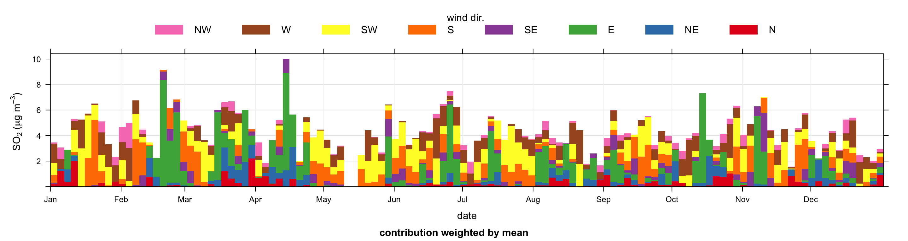
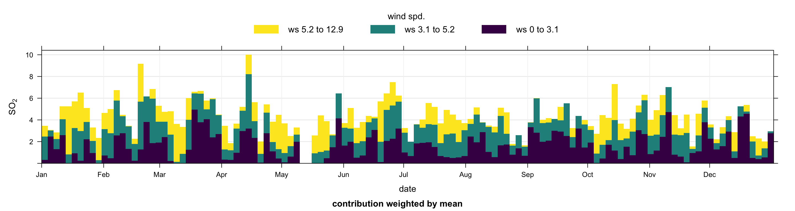

13 Time proportion plots
13.1 Background
The timeProp (‘time proportion’) function shows time series plots as stacked bar charts. For a particular time, proportions of a chosen variable are shown as a stacked bar chart. The different categories in the bar chart are made up from a character or factor variable in a data frame. The function is primarily developed to support the plotting of cluster analysis output from polarCluster (see Section 8.8) and trajCluster (see Section 10.8) that consider local and regional (back trajectory) cluster analysis respectively. However, the function has more general use for understanding time series data. In order to plot time series in this way, some sort of time aggregation is needed, which is controlled by the option avg.time.
The plot shows the value of pollutant on the y-axis (averaged according to avg.time). The time intervals are made up of bars split according to proportion. The bars therefore show how the total value of `pollutant} is made up for any time interval.
13.2 Examples
An example of the timeProp function is shown in Figure 13.1. In this example SO2 concentrations are considered for 2003 (using the selectByDate function). The averaging period is set to 3 days and the mean concentration is plotted and the proportion contribution by wind sector is given. Other options are chosen to place the key at the top and choose the number of columns used in the key. It is apparent from Figure 13.1) that the highest SO2 concentrations are dominated by winds from an easterly sector, but actually occur throughout the year.
library(openair) # load the package
timeProp(selectByDate(mydata, year = 2003),
pollutant = "so2", avg.time = "3 day",
proportion = "wd",
date.breaks = 10, key.position = "top",
key.columns = 8, ylab = "so2 (ug/m3)")
timeProp plot for SO2 concentrations in 2003. The data are categorised into 8 wind sectors for 3-day averages.Note that proportion can be an existing categorical (i.e. factor or character) variable in a data frame. If a numeric variable is supplied, then it is typically cut into four quantile levels. So, for example, the plot below would show four intervals of wind speed, which would help show the wind speed conditions that control high SO2 concentration — and importantly, when they occur.
An example of using timeProp with a continuous variable is shown in Figure 13.2. In this case the wind speed values are split into 3 quantile levels. The number of quantiles used is determined by the option n.levels. This approach can be used for any numeric variables.
timeProp(selectByDate(mydata, year = 2003),
pollutant = "so2",
avg.time = "3 day",
n.levels = 3,
cols = "viridis",
proportion = "ws", date.breaks = 10,
key.position = "top", key.columns = 3)
timeProp plot for SO2 concentrations in 2003. The data are categorised into 4 wind speed categories for 3-day averages.One of the key uses of timeProp is to post-process cluster analysis data. Users should consider the uses of timeProp for cluster analysis shown in Section 8.8 and Section 10.8. In both these cases the cluster analysis yields a categorical output directly i.e. cluster, which lends itself to analysis using timeProp.